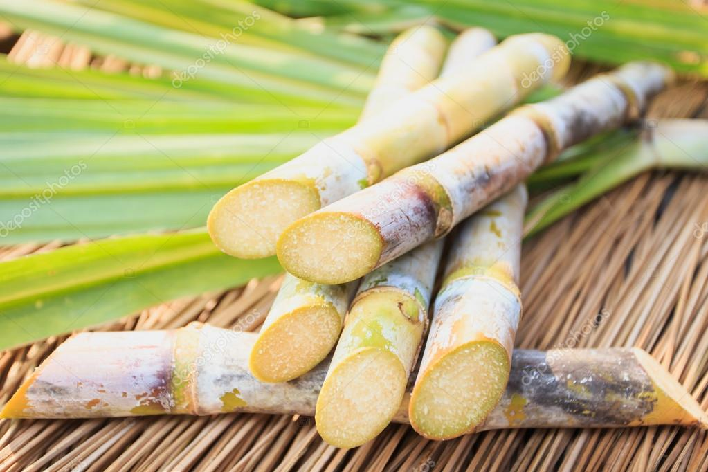
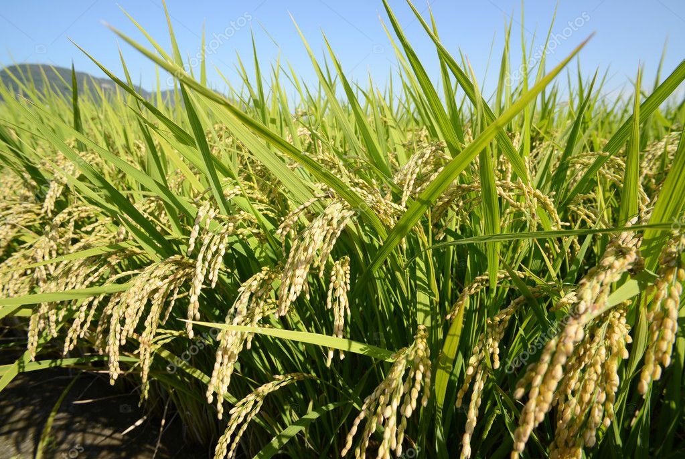

Resumo
A tecnologia da informação promoveu a revolução 4.0, que reverberou tanto na indústria, quanto na agricultura. Neste segundo setor, a tecnologia é utilizada para melhorar a produtividade no campo. Sendo aplicado inovações tecnológicas, como ciência de dados, inteligência artificial, e computação em nuvem. O agricultor está intimamente ligado a essas inovações. Nesse contexto, está sendo desenvolvido o App Nosso Campo, para ser uma ferramenta de auxílio a esse produtor em seu cotidiano na produção. Sua monetização será feita através de propaganda, e também com o pagamento feito pelo usuário para obter serviços exclusivos.O usuário terá acesso ao catálogo de plantas disponíveis, e ser notificado em tempo real, no seu smartphone, onde poderá acompanhar todo o processo de crescimento da planta, a quantidade de água necessária, adubação e o tempo de exposição à luz solar. As principais informações de cultivo para uma determinada cultura agrícola, serão fornecidas pelo App.
Palavras-Chave: App, agricultura 4.0, tecnologia.
O que você procura?
-

Cana-de-açúcar
Qual o período de plantio.
-

Arroz
Qual o solo apropriado.